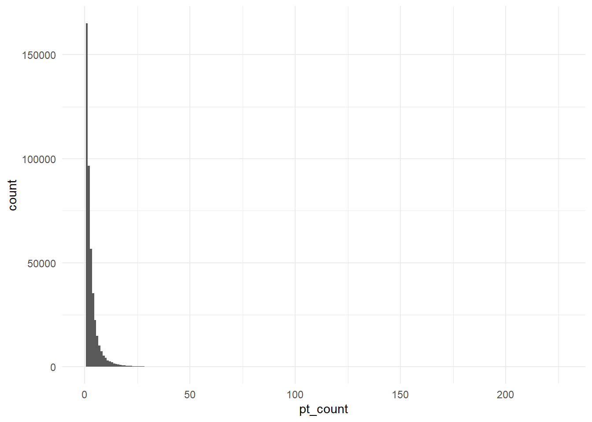
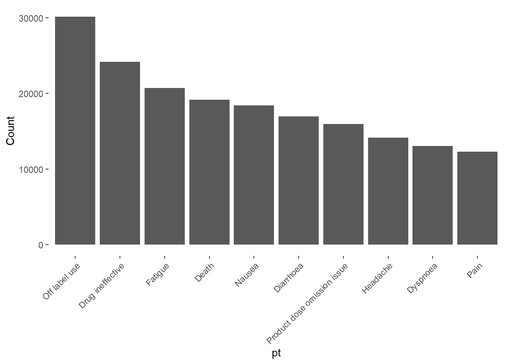
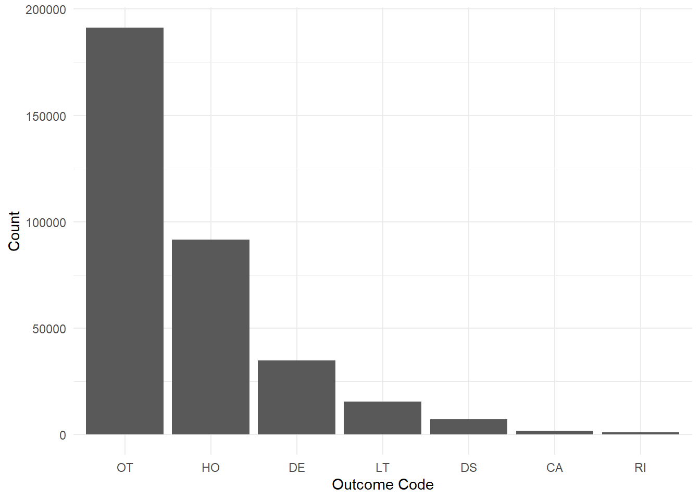
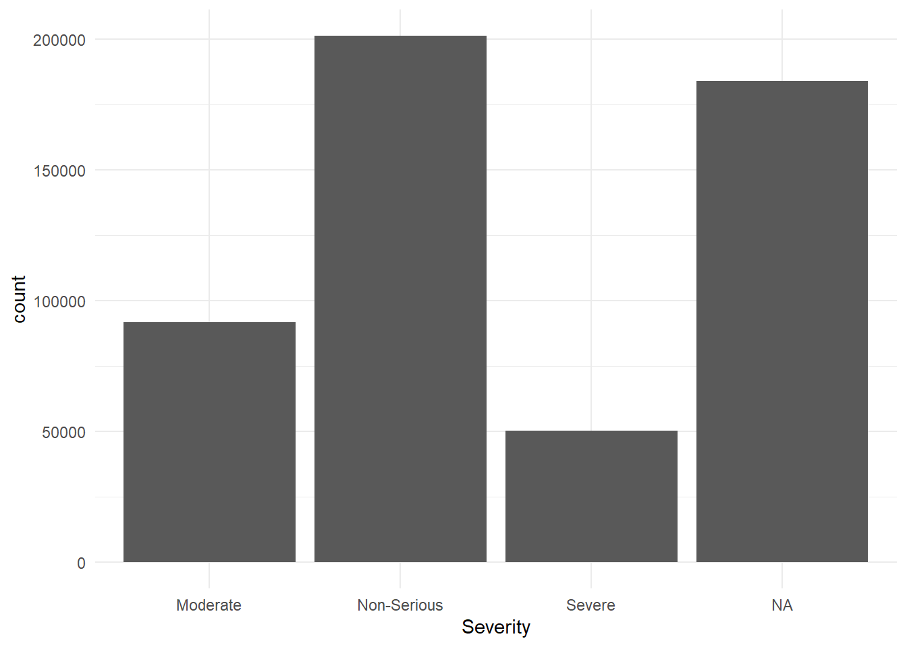
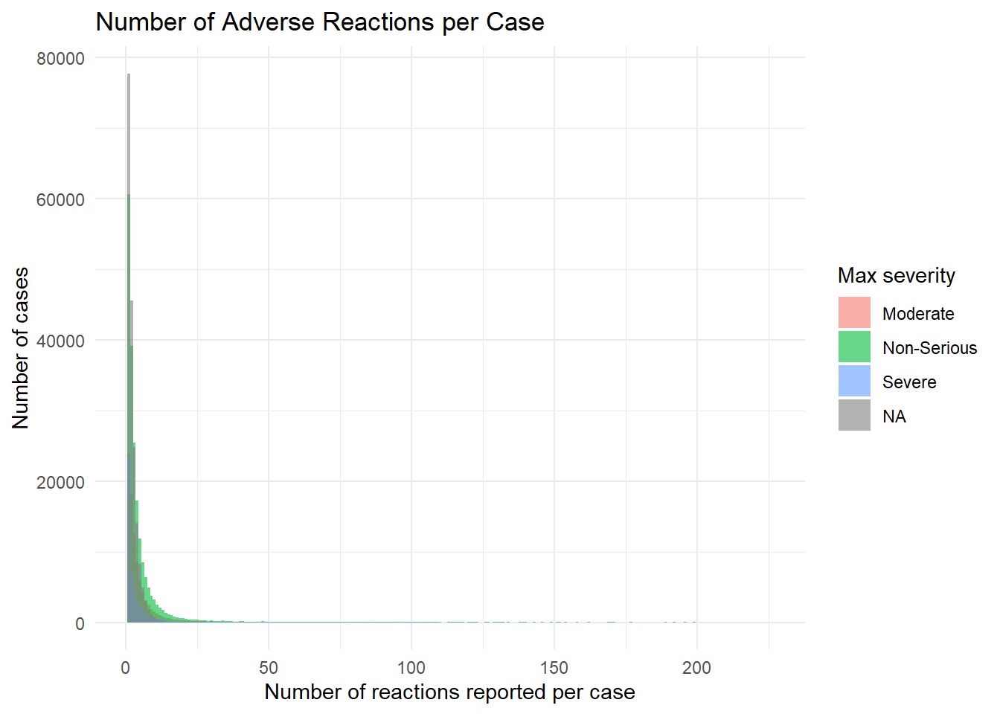
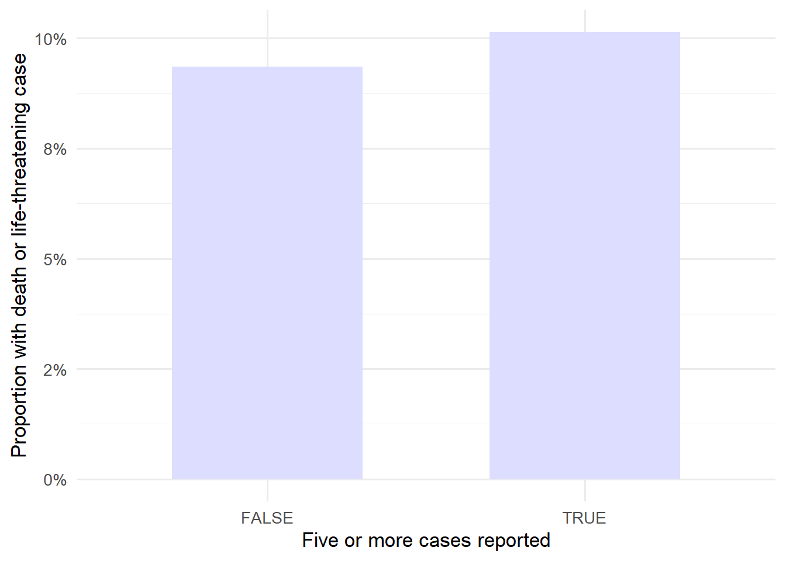

| primaryid | caseid | pt | drug_rec_act |
|---|---|---|---|
| 100289774 | 10028977 | Fixed eruption | |
| 100289774 | 10028977 | Stevens-Johnson syndrome | |
| 100289774 | 10028977 | Toxic epidermal necrolysis | |
| 1005762123 | 10057621 | Dyspnoea | |
| 1005762123 | 10057621 | Hypotension | |
| 1005762123 | 10057621 | Asthma |
Reproducible Pharmacovigilance Workflow Using FAERS Data (2025 Q3)
Executive Summary
This project demonstrates a reproducible workflow for exploratory pharmacovigilance analysis using the FDA Adverse Event Reporting System (FAERS) 2025 Q3 dataset.
Using structured R scripts and case-level aggregation, I examined:
- Frequently reported adverse reaction terms
- Case-level reporting patterns
- Data structure and duplication considerations
This analysis is exploratory and intended for structured signal awareness rather than causal inference.
This case study reflects how I structure large healthcare datasets with clarity, traceability and cautious interpretation.
Analytical Objective
To examine reporting patterns in FAERS 2025 Q3 data by combining:
• Reaction reporting behaviour (REAC table)
• Outcome severity indicators (OUTC table)
The goal is exploratory signal awareness using case-level aggregation, not estimation of clinical risk.
Context
Spontaneous adverse event databases such as FAERS contain large volumes of real-world safety reports.
However, these data are frequently misinterpreted because reporting frequency is influenced by awareness, reporting behaviour, and follow-up submissions rather than true incidence.
For healthcare and research teams, the practical value of FAERS lies in structured signal awareness rather than causal inference.
This project explores how reporting patterns can be examined cautiously using a reproducible R workflow.
Data Source
- [FAERS public dataset (FDA)](https://fis.fda.gov/extensions/FPD-QDE-FAERS/FPD-QDE-FAERS.html)
- Reporting is voluntary
- Data includes duplicates and reporting bias
The most recent data as of current date was downloaded and used. The faers_ascii_2025q3.zip was downloaded from the official United States government website.
The folder includes seven .txt files:
- DEMO25Q3.txt (Demographics)
- DRUG25Q3.txt (Drug)
- INDI25Q3.txt (Indication)
- OUTC25Q3.txt (Outcome)
- REAC25Q3.txt (Reaction)
- RPSR25Q3.txt (Report_Sources)
- THER25Q3.txt (Therapy)

This analysis uses the FDA Adverse Event Reporting System (FAERS) public dataset, specifically the REAC and OUTC table from 2025 Q3.
The REAC table contains adverse reaction terms reported for individual case reports. Each row represents a reported reaction linked to a case identifier (primaryid).
The OUTC table contains patient outcome information for each adverse event report, indicating the result of the event (Such as death, hospitalisation etc.)
Data and Structural Consideration
It is important to note that FAERS data is based on spontaneous reports and does not represent confirmed adverse drug reactions.
Several limitations must be considered when interpreting FAERS adverse reaction data such as:
- A single case may include multiple reported reactions
- Reporting frequency does not equal incidence or risk
- Duplicate or follow-up reports may exist
- Reporting is influenced by media attention and regulatory actions
As a result, counts and trends should be interpreted cautiously and used for signal exploration rather than causal inference.
Important:
This analysis is exploratory and does not imply causality.
All analyses were conducted at the case level (caseid) to reduce over-counting from follow-up submissions.
Reproducible Workflow
To ensure traceability and repeatability, the analysis was performed using a scripted workflow in R rather than manual data manipulation.
The workflow consisted of:
- Importing raw FAERS ASCII files directly into R
- Performing case-level aggregation to avoid double counting follow-up reports
- Applying cleaning and transformation steps through documented code
- Generating tables and figures automatically from the analysis script
This approach ensures the results can be regenerated whenever the dataset is updated and provides a clear audit trail of all processing steps.
Analytical Approach
The analysis is structured in two complementary parts.
First, the REAC table is used to understand what types of reactions are most frequently reported and how reports are distributed across cases.
Second, the OUTC table is used to examine how serious those reported cases are.
Together, these perspectives allow cautious interpretation:
frequently reported events are not necessarily severe, and severe outcomes are not necessarily frequent.
REAC Table Overview
Key variables include:
primaryid: Unique identifier for each case reportpt: Preferred Term describing the adverse reaction (MedDRA)caseid: Case-level identifierdrug_rec_act: Drug Recur Action Data if the adverse reaction reappears upon re-administration of the drug.
REAC Data Preparation
Data exploration of REAC table.
# Number of rows in REAC table
nrow(reac)[1] 1535133# How many primary IDs are in the table
length(unique(reac$primaryid))[1] 438512# How many unique case IDs are there
length(unique(reac$caseid))[1] 438512“How many adverse reaction terms are reported per case?”
In the 25Q3 version the number of caseid are the same as the number of primaryid, but for the purpose of clarification, as FAERS cases may include multiple report versions due to follow-up submissions, analyses in this report are conducted at the case level (caseid) to avoid over-counting reactions associated with report updates.
Remove duplicate rows
#Remove `primaryid`
reac_new <- select(reac, -"primaryid")#Remove duplicate rows
reac_new <- reac_new %>%
distinct()Check for missing data
| caseid | pt |
|---|---|
| 0 | 0 |
No missing data observed in caseid and pt.
REAC Data Analysis
Frequency of reactions per case
Count how many cases have n number of adverse reactions.
| num_reactions | num_cases |
|---|---|
| 1 | 165032 |
| 2 | 96560 |
| 3 | 56754 |
| 4 | 35258 |
| 5 | 22402 |
#Summary of number of reactions
summary(reac_per_case$`Number of reaction`) Min. 1st Qu. Median Mean 3rd Qu. Max.
1.00 1.00 2.00 3.46 4.00 226.00 #IQR of number of reactions
IQR(reac_per_case$`Number of reaction`)[1] 3
Reaction Reporting Behaviour
Most cases report only a small number of reaction terms, with a long tail of multi-reaction cases.
This reflects reporting behaviour rather than clinical complexity alone.
The median number of reported reactions per case is low, indicating that single-event reporting is common in spontaneous submissions.
As expected, the number of cases decreases as the number of adverse reactions increase. About a quarter of the cases only had one adverse events, with median of 2 pts per case, suggesting that single-event reporting is common.
Frequently Reported Reaction Terms
The following table summarises the most frequently reported preferred terms in the dataset.
These represent reporting concentration rather than confirmed drug risk.
| pt | Count |
|---|---|
| Off label use | 30127 |
| Drug ineffective | 24151 |
| Fatigue | 20698 |
| Death | 19165 |
| Nausea | 18412 |
| Diarrhoea | 16955 |
| Product dose omission issue | 15936 |
| Headache | 14143 |
| Dyspnoea | 13040 |
| Pain | 12296 |

Outcome Severity Perspective (OUTC)
Reaction frequency alone cannot indicate clinical importance.
To add context, outcome information is examined to understand how serious reported cases are.
While REAC shows what is reported, OUTC shows the consequence of those reports.
OUTC Table Overview
Now we will look at the OUTC25Q3.txt file to find the distribution of the severity of adverse effects.
| primaryid | caseid | outc_cod |
|---|---|---|
| 100289774 | 10028977 | HO |
| 100289774 | 10028977 | OT |
| 1005762123 | 10057621 | HO |
| 100789263 | 10078926 | DE |
| 101573482 | 10157348 | HO |
| 101573482 | 10157348 | OT |
Key variables include:
primaryid: Unique identifier for each case reportcaseid: Case-level identifier.outc_cod: Code of the outcome- DE = Death
- LT = Life-threatening
- HO = Hospitalisation
- DS = Disability
- CA = Congenital anomaly
- RI = Required intervention
- OT = Other
OUTC Data Preparation
| primaryid | caseid | outc_cod |
|---|---|---|
| 0 | 0 | 0 |
OUTC Data Analysis
| outc_cod | n |
|---|---|
| OT | 191229 |
| HO | 91722 |
| DE | 34803 |
| LT | 15461 |
| DS | 7226 |
| CA | 1758 |
| RI | 1052 |

Total of 34,803 deaths, possibly caused by drugs, is an astonishing number considering this data is only one quarter of a year.
As the codes are quite broad, we cannot determine what exactly “Others” is, but according to the FAERS document it is all important medical event. “Requiring intervention” (To Prevent Permanent Impairment/Damage) scored the lowest which indicates most of the adverse effects are unpreventable, or are unnoticed before it is too late.
The number of “Deaths” are well above the adverse effect of 19,165 in the REAC table - The reason possibly being because there may had been other side effects and those who submitted the data had interpreted Death as the outcome, instead of an adverse effect.
There is no clear cut as to what is categorised as serious and what is not, but for the purpose of this report, DE and LT will be categorised as “Serious”, HO as “Moderate” and others as “Non-serious”.

Combining REAC and OUTC Tables
| caseid | n_reactions | five_or_more_reactions |
|---|---|---|
| 3731857 | 3 | FALSE |
| 4119816 | 1 | FALSE |
| 4197637 | 2 | FALSE |
| 5815921 | 9 | TRUE |
| 5821261 | 6 | TRUE |
| 5962033 | 5 | TRUE |
| 6047261 | 3 | FALSE |
| 6171681 | 2 | FALSE |
| 6171682 | 5 | TRUE |
| 6171684 | 2 | FALSE |
| caseid | outc_cod | Severity |
|---|---|---|
| 10078926 | DE | Severe |
| 10346795 | DE | Severe |
| 10410135 | DE | Severe |
| 10427284 | DE | Severe |
| 10427284 | LT | Severe |
| 10449048 | DE | Severe |
| 10463057 | DE | Severe |
| 10597316 | LT | Severe |
| 10621415 | LT | Severe |
| 10732078 | DE | Severe |
| caseid | n_reactions | five_or_more_reactions | outc_cod | Severity |
|---|---|---|---|---|
| 3731857 | 3 | FALSE | DE | Severe |
| 3731857 | 3 | FALSE | HO | Moderate |
| 3731857 | 3 | FALSE | OT | Non-Serious |
| 4119816 | 1 | FALSE | HO | Moderate |
| 4197637 | 2 | FALSE | DE | Severe |
| 4197637 | 2 | FALSE | OT | Non-Serious |
| 5815921 | 9 | TRUE | HO | Moderate |
| 5815921 | 9 | TRUE | DS | Non-Serious |
| 5821261 | 6 | TRUE | DE | Severe |
| 5821261 | 6 | TRUE | HO | Moderate |
| 5821261 | 6 | TRUE | OT | Non-Serious |
| 5962033 | 5 | TRUE | DE | Severe |
| 5962033 | 5 | TRUE | HO | Moderate |
| 6047261 | 3 | FALSE | DE | Severe |
| 6047261 | 3 | FALSE | LT | Severe |
| caseid | outc_cod | Severity | n_reactions | five_or_more_reactions |
|---|---|---|---|---|
| 0 | 184126 | 184126 | 0 | 0 |
Many of the cases has missing outcomes - This shows the realness of data gathering; as the outcome reporting is optional many cases will report reactions caused by drugs only. Because this is an important part of the analysis, the missing values are (By R default) included as “NA”. i.e. No outcome recorded.

kable(reac_outc %>%
count(Severity) %>%
mutate(percentage = n / sum(n) * 100))| Severity | n | percentage |
|---|---|---|
| Moderate | 91722 | 17.392112 |
| Non-Serious | 201265 | 38.163401 |
| Severe | 50264 | 9.530943 |
| NA | 184126 | 34.913544 |
Only 65.1% of FAERS cases report outcome data. Severity analyses therefore reflect a subset of reports and may underestimate true risk.


Although the difference is subtle, cases reporting five or more adverse reactions show a higher proportion of severe outcomes (death or life-threatening reactions) compared with cases reporting fewer reactions.
Interpretation
Combining reaction frequency and outcome severity provides a more cautious understanding of FAERS data.
Frequently reported reactions do not necessarily correspond to severe outcomes, and serious outcomes may occur in less frequently reported terms.
This demonstrates why spontaneous reporting databases should be used for signal awareness and prioritisation rather than risk estimation.
Clinical Context
It is very important to keep in mind that these are all real-life data with many missing values and errors. It is not possible to know where there may be errors, but a few possibilities include:
- Error submitting an update as a new case
- Entry error
- Multiple drug administration by one patient leading to identifying the wrong drug as the culprit of adverse reactions
While there are many possible errors to keep in mind, the data has a huge number of cases reported. Larger reporting volume may reveal consistent patterns, but does not remove reporting bias. An increase in reports does not necessarily indicate increased risk. Possible contributions to the bias include:
- Increased prescribing
- Media attention
- Regulatory changes
The results should be read and analysed with the potential errors and influences in mind, and any healthcare professionals or researchers who intend to use this as reference should always use their clinical judgement.
Key Findings
- Reporting frequency is concentrated in a small subset of reaction terms
- Most cases contain a limited number of reported reactions
- Serious outcomes occur across both frequent and infrequent terms
- Reaction frequency alone does not indicate clinical severity
Potential Use Cases
This type of analysis could support:
- Pharmacovigilance signal review
- Internal safety discussions
- Educational summaries
Conclusion
This case study demonstrates a reproducible approach to structuring and interpreting large pharmacovigilance datasets in R.
By separating reaction frequency from outcome severity and analysing data at the case level, reporting patterns can be explored while maintaining appropriate clinical caution.
Such workflows support exploratory safety assessment and communication, but should not be interpreted as evidence of causality or incidence.